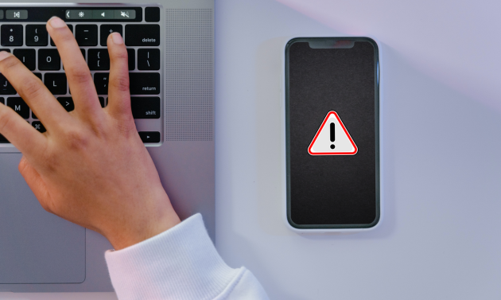

Eixo: Cultura Digital — letramento midiático e informacional, cidadania e ética digital, segurança e responsabilidade no uso das tecnologias.
Público: Ensino Fundamental II (6º ao 9º ano).
Objetivo: Desenvolver habilidades de análise crítica de informações, checagem de fontes e produção responsável de conteúdo digital.
Duração: 2 aulas de 50 minutos (aprox. 100 minutos).
Formato: Trabalho em grupos de 3 a 4 estudantes.
Materiais: Cartões/roteiro de checagem (checklist), dispositivos com acesso à internet (ou recortes impressos), editores de texto/apresentação, quadro/parede para exposição.
Competências e habilidades trabalhadas:
Pesquisar, selecionar e avaliar a confiabilidade de fontes de informação.
Compreender autoria, credibilidade, evidências e viés em mídias digitais.
Produzir conteúdo responsável (texto, cartaz ou post) com indicação de fontes.
Praticar etiqueta e ética digital, respeito à privacidade e combate à desinformação.

Checagem de fatos e produção de conteúdo responsável.
Preparação da atividade (para o professor):
Selecionar 6–8 manchetes/notícias (reais e/ou falsas), variando fontes e formatos (post, notícia curta, imagem com texto).
Imprimir ou disponibilizar digitalmente um checklist de verificação (autor, data, fonte primária, evidências, endereço/URL, seção “Sobre”, aspas, imagens inversas, viés linguístico, etc.).
Organizar a turma em grupos e definir um quadro de pontuação/feedback.
Execução da atividade:
Fase 1 — Aquecimento (10 min): Discussão guiada: “Como identificamos se uma notícia é confiável?” Registrar ideias-chave no quadro.
Fase 2 — Missão de Checagem (35 min): Cada grupo recebe 2–3 itens para verificar usando o checklist. Devem:
Rastrear a fonte original e conferir a data.
Encontrar pelo menos 2 confirmações independentes (ou explicar por que não há).
Identificar possíveis sinais de manipulação (título apelativo, imagem fora de contexto, citações sem fonte).
Registrar um veredito: confiável, dúbia ou falsa, com justificativas.
Fase 3 — Produção (25 min): Cada grupo transforma os achados em um microguia (cartaz A4, slide ou “post” educativo) com título, 3 a 5 dicas e exemplos.
Fase 4 — Compartilhamento e Curadoria (20–30 min): Exposição dos microguias, comentários cruzados entre grupos e votação do guia mais claro e útil.
Checklist de checagem (sugestão para impressão):
Quem é o autor? Há credenciais e contato?
Qual é a data? A informação está atualizada?
Fonte primária citada? Há links e evidências verificáveis?
Outros veículos confiáveis confirmam?
O site possui seção “Sobre”, política editorial e correções?
O título corresponde ao conteúdo? Linguagem sensacionalista?